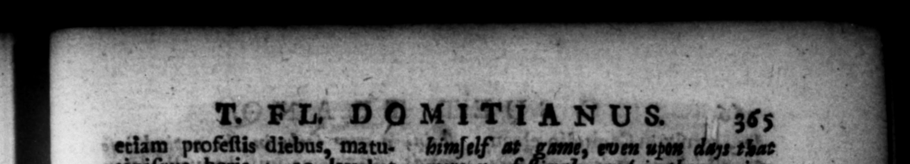
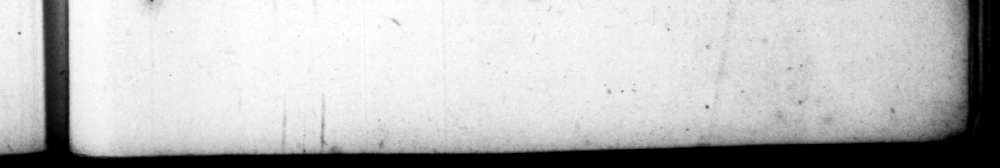

etiam 3 bovis f pulla potiunculam ſumeret. d — frequenter ac lied fu large, ſed Bere lis ocgaſum, nec non ultra ut poſtea comeſſaretur. 2d boram ſomni nihil _ quam ſecreto ſolus lata. « I ' { 23. Libidinis nimiz, affiduitatem concubitus velut exercitationis genus, clinopalen vocabat. Eratque fama N Am d Uuaſi concubinas 1pſe elivellerer, nataretque inter vulgatiſſimas meretrices. Fratris filiam adhuc virginem oblatam in matrimonium ſibi, cum 7 tus. Domitiæ nuptiis pert _ ciſſime recuſaſſet, non multo ris exſtiterit, coactæ 23. Occiſl morPK e = populus 23, The _peotle took his death indifferenter, miles gra viſſime tulit, ſtatimque eum Dum appellare con fecit, ex inaciſſime cædis auctoriContra, Senatus adeo læ- - puniſhment — t had been contatus eſt, ut repleta certatim cern'd #n his deat curia, non temperaret, mortuum contumelio! uin mo atque acerbiſſimo acclamatio- Þt mot num genere laceraret : ſcalas bitter abu ve Uanguage, ordering ladetiam inferri clypeoſque & imagines ejus cotam detrahi, & ibidem ſolo affligi juberet : noviſſime eradendos ubique ti. i aliud, ber death, e nr tum a ſe abigere benen e ber late dd. and 1 a ent ert ainmems, commonty in 4 , for he never continued them beyond ſun-ſet, and had no drinking repeſt after ; for till-bed- Time he aid nothing e but walk by zz. He was. very lewd, Frequent cation, as if it was A ſort of exerciſe, be called bed. wreſili it was reftinately refu 22 is un concernedly, but the ſoldiery 208 beinouſly, and immediately endeavoured eſt: paratus to have m ranked among ſt the Gods & ulciſci, niſi "Utes defuiſ- 8 . ſent, quod quidem lo poſt . Mulatis 2 being ready to have re venged his death, but that they wanted ſome to head them, "Which however they did effect ſoon after, -by reſolutely demanding for 2 {eng On * 2 hand, te was ſo overjoy'd, that t aſſembled in all haſte, and in 4 houſe. Texiled his memory in the their ches, and daſhed to pieces upon | the 7 aint the nd, and finally tulos, abolendamque — paſſed 22 fo * his titles every memoriam decerneret. Paucos quam ocoidere tur men- fer ever, A few months before he was Ante where, and abolifh all memory of bim fes Ro =

